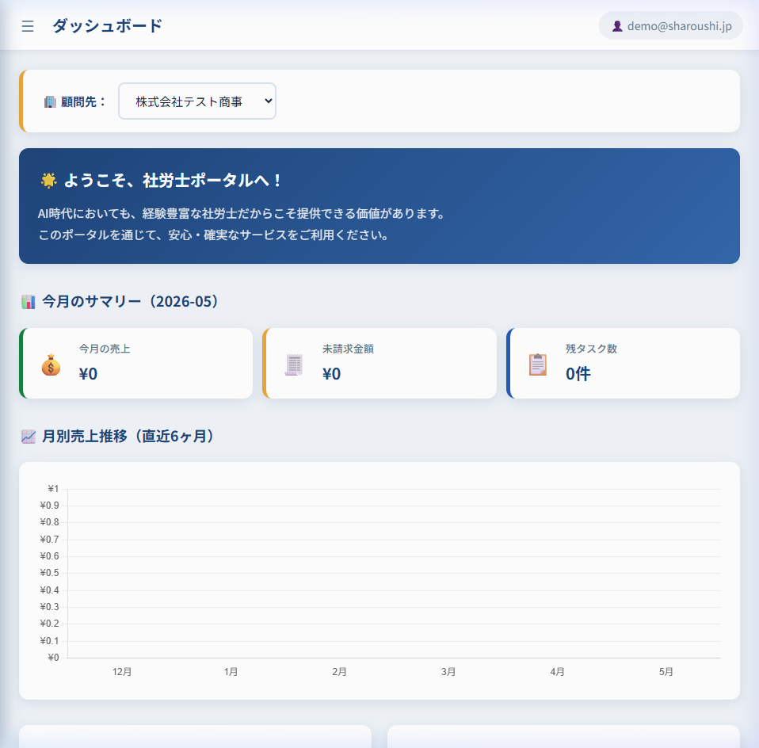

社労士ポータルの今後の開発にあたり、ご確認いただきたい内容です
作成: 2026-05-03 | 作成者: 岩城
URL: https://shoroushi-portal.onrender.com
| 種別 | メールアドレス（ID） | パスワード | 備考 |
|---|---|---|---|
| 👔 社労士 | demo@sharoushi.jp | demo123 | 全顧問先のデータを閲覧・切替え可能 |
| 🏢 クライアントA | client1@himawasa.jp | client123 | 株式会社テスト商事 |
| 🏢 クライアントB | sharoushi@himawasa.jp | sharoushi123 | HiMaWaSa 社労士（テスト用） |
※ 初回アクセス時はサーバー起動に30秒ほどかかる場合があります

PCA給与の社員マスターには複数のタブがあると伺っています。
具体的にどんなタブがあるか教えてください。ポータルも同じタブ構成に作り変えます。
（例：基本情報、給与、社会保険、税金、銀行口座…など）
以前共有いただいたスプレッドシートに項目一覧があるとのことですが、
現在のポータルに「足りていない項目」を具体的に教えてください。
特に以下が不足していると思われます：
仕様書に「顧問先が入力できる箇所と、社労士のみが入力できる箇所を制御したい」とありました。
具体的にどの項目が「顧問先入力OK」で、どの項目が「社労士のみ」か教えてください。
| 権限 | 項目の例（イメージ） |
|---|---|
| 👤 顧問先が入力OK | 氏名、住所、家族構成、銀行口座 |
| 🔒 社労士のみ | 基本給、社会保険番号、税金関連 |
↑ このイメージで合っていますか？
仕様書にPCAクラウドの認証情報が記載されていました。
この環境に接続して、APIの動作テストを行ってもよいでしょうか？
（テスト用のダミーデータで、本番データには影響を与えない範囲で行います）
| パターン | 内容 | 用途 |
|---|---|---|
| ① ポータル → PCA | ポータルで入力 → PCA給与に送信 | 二重入力の削減 |
| ② PCA → ポータル | PCA給与の既存データ → ポータルに読込 | 初期データ移行 |
| ③ 双方向 | 両方 | 完全同期 |
仕様書に「手当マスターにPCA給与の記号を入力できる仕様とする」とありました。
| PCA記号 | 推測される項目 | 正しい項目名は？ |
|---|---|---|
| AA003 | 出勤日数？ | ← 教えてください |
| AA005 | ？ | ← 教えてください |
| AA009 | ？ | ← 教えてください |
| AA011 | 残業時間？ | ← 教えてください |
| BB007 | ？ | ← 教えてください |
| BB008 | ？ | ← 教えてください |
仕様書のシステム構成図に「iPaaS（既製品）」が登場しています。
どの部分をiPaaSに任せ、どの部分をポータルから直接APIを叩くか教えてください。
| パターン | 内容 |
|---|---|
| A | 全部ポータルから直接APIを叩く |
| B | 勤怠SaaSの取得はiPaaS、PCA連携はポータルから |
| C | 全部iPaaS経由 |
| 種類 | 例 | 向いている業種 |
|---|---|---|
| 売上高・粗利 | 月次売上 ÷ 労働時間 | 営業・小売・サービス |
| 付加価値額 | （売上 − 外部費）÷ 労働時間 | 製造業 |
| 件数 | 対応件数 ÷ 労働時間 | コールセンター・物流 |
| タスク | 完了タスク数 ÷ 労働時間 | IT・プロジェクト型 |
💡 売上高が一番シンプルで、すでにポータルに売上データがあるので着手しやすいです
仕様書に「予実を見れるようにする（予定月別入力）」とありました。
最初のバージョンから入れますか？ それとも後で追加しますか？
以下すべてに対応予定ですが、最初に作る優先順位は？